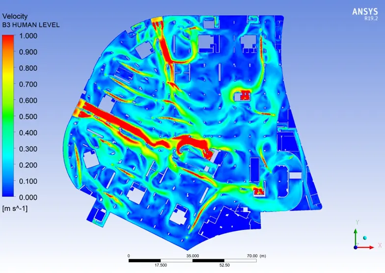
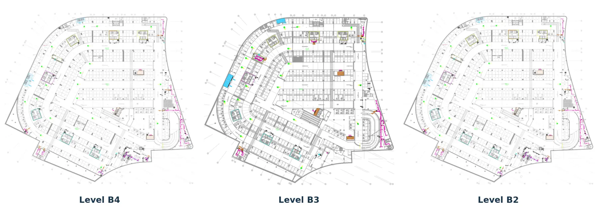
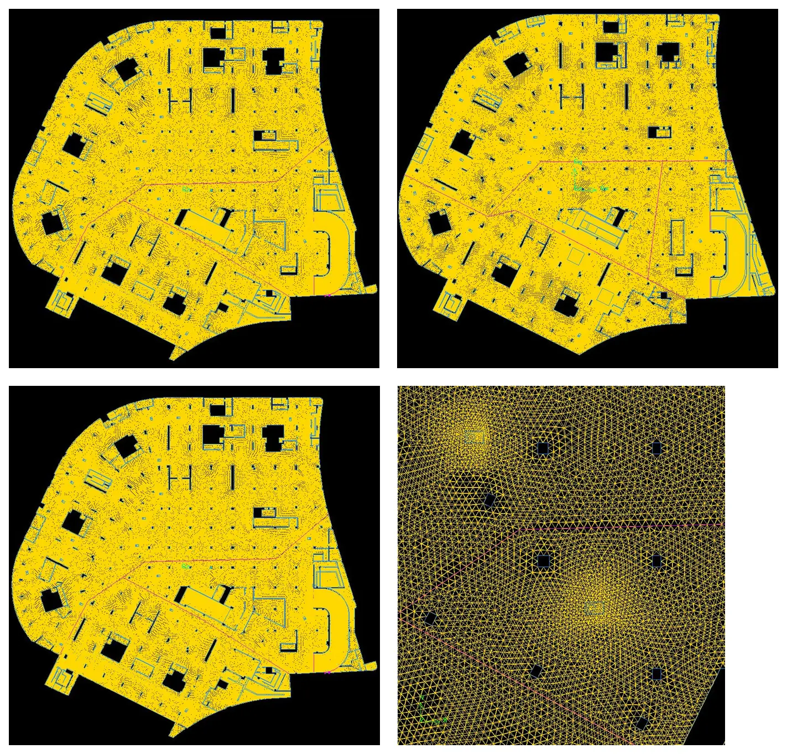
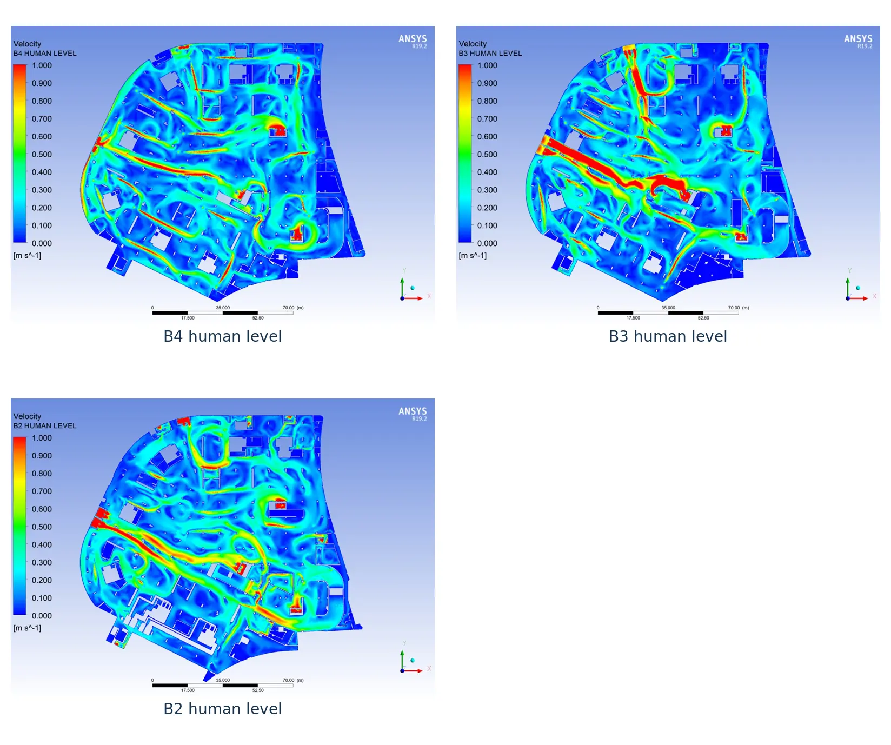
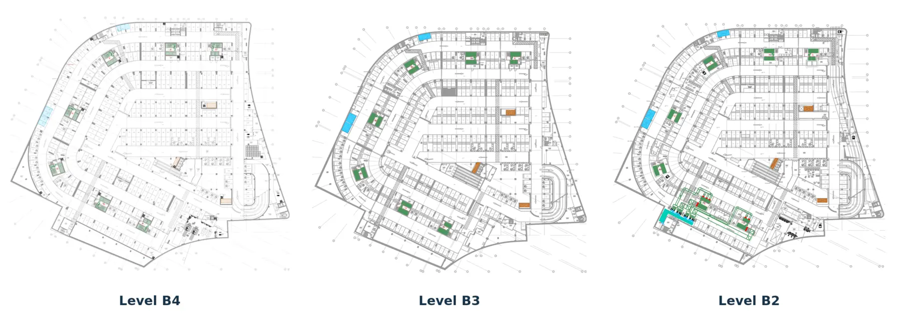
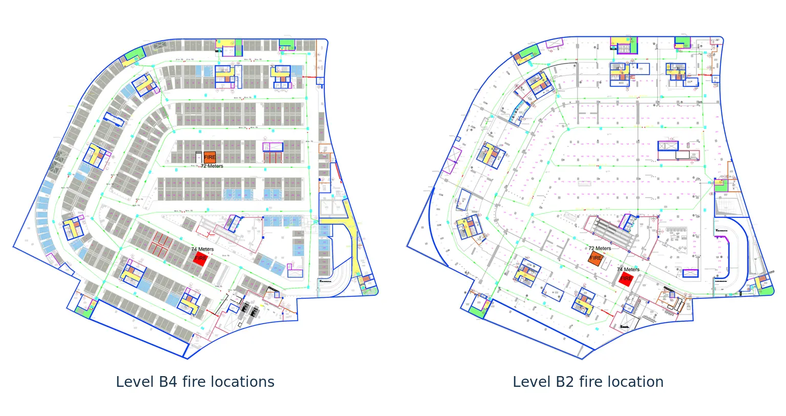

Starting question
Could the completed fan and shaft arrangement ventilate every floor and preserve usable escape conditions during the selected fires?
Engineering case study · 2021
A CFD study that separated visible air movement from the floor-level performance the system actually delivered.
The 2021 analysis is presented as reported and was not rerun for this portfolio edition. The original design criteria require confirmation before current code approval or construction use.

The study examined a three-level underground car park under routine ventilation and fire conditions. The model had to distinguish local circulation created by jet fans from the net supply and extract flow that renews each floor.
Could the completed fan and shaft arrangement ventilate every floor and preserve usable escape conditions during the selected fires?
Levels B2, B3, and B4; ramps, cores, openings, six main shaft boundaries, 59 induction fans, and three fire scenarios.
Six air changes per hour in normal operation, ten in fire mode, occupied-height velocity, smoke movement, and escape-path exposure.
Prepare the CFD model, define the numerical method and boundary conditions, interpret the results, and turn them into design recommendations.

The useful result was not a colourful contour. It was the chain of checks that connected architecture, fan duties, numerical physics, and evacuation risk.
What geometry controls the air?
The architectural and mechanical plans were inverted into connected air volumes. Ramps, cores, columns, shafts, vents, fan locations, and escape routes were retained where they could alter the flow.
Output · Three connected floor domains representing B2, B3, and B4.
What has to be true?
Average air renewal and local conditions answer different questions. The model therefore combined floor-level air-change targets with velocity and species checks along occupied and escape-path elevations.
Output · 6 ACH in normal operation, 10 ACH in fire mode, plus occupied-height flow and tenability review.
Where can a coarse mesh hide the answer?
Local refinement was concentrated around inlets, jet-fan outlets, fires, openings, and geometry changes. Less sensitive regions used larger elements to keep the three-floor model computationally practical.
Output · 4.19 million nodes and 22.57 million elements, with reported element sizes from 50 to 500 mm.
Which physics does each operating mode require?
Normal ventilation was solved as a steady-state airflow problem. The fire cases were transient and added gravity, temperature-dependent density, energy, and species transport to represent buoyant smoke and combustion products.
Output · A standard k–ε ventilation model and transient fire models with heat and species transport.
Are the fans solving the same problem as the shafts?
Velocity plots showed that the jet fans formed useful local paths. The floor flow balance revealed a different system-level result: B2 and B3 received excess air while B4 remained below target.
Output · The governing failure moved upstream from individual jet fans to floor-by-floor supply and extraction.
Does the control sequence preserve escape time?
Three 4 MW vehicle-fire cases were positioned to challenge long escape paths and the principal fire-fan influence. Conditions were compared before and after the reported 180-second control activation.
Output · A time-based review of smoke control, exposure, evacuation assumptions, and recovery after fan activation.

The same imbalance appeared in both operating modes. This made the diagnosis stronger: the issue was not a single fan setting but the way the shared supply and extract system distributed capacity across the building.
Normal ventilation · target 6 ACH
| Level | Calculated | Result |
|---|---|---|
| B2 | 16.75 ACH | Pass |
| B3 | 11.76 ACH | Pass |
| B4 | 3.98 ACH | Fail |
Fire operation · target 10 ACH
| Level | Calculated | Result |
|---|---|---|
| B2 | 38.75 ACH | Pass |
| B3 | 27.39 ACH | Pass |
| B4 | 9.12 ACH | Fail |
The jet fans redistribute momentum inside a level. They cannot correct a supply-and-extract system that sends too much capacity to B2 and B3 and too little to B4.

The source record uses different floor volumes in the normal and fire calculations and also contains conflicting total-area values. The professional report preserves the stated results and identifies those discrepancies for confirmation.
B2 was closest to the principal mechanical influence and received the largest flow. B4 depended on shared shafts and indirect paths, yet had the longest modeled escape routes and the lowest renewal rate.

Fire locations were selected near long escape paths and areas expected to challenge extraction. Each source represented a sprinklered-car-park vehicle fire over a 2 m by 5 m footprint.
Case 01
A single 4 MW source tests a critical lower-level escape path.
Case 02
Two simultaneous 4 MW sources test the most severe lower-level case.
Case 03
A single 4 MW source tests the level closest to the principal fire-fan influence.

The activated controls did not recover the modeled environment. The source narrative says two cases were acceptable at 90 seconds and the remaining case was near the boundary, but its floor labels conflict with the listed scenarios; that ambiguity is retained rather than guessed away.
Because B2 and B3 already had substantial excess capacity, the first response is to control where the air goes, how smoke is collected, and when the system changes mode.
A professional design-stage update would test whether the diagnosis survives numerical, operational, and fire-safety uncertainty.
Professional project report
The original 2021 analysis has been rewritten as a focused 18-page report with the model setup, calculations, results, design diagnosis, recommendations, and source-data reconciliation.